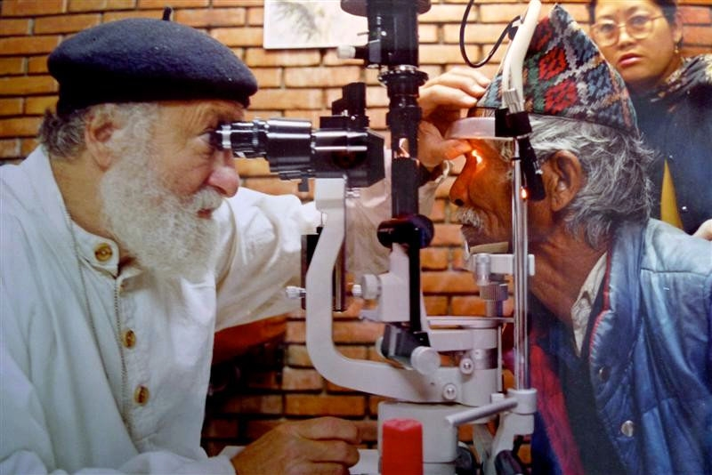
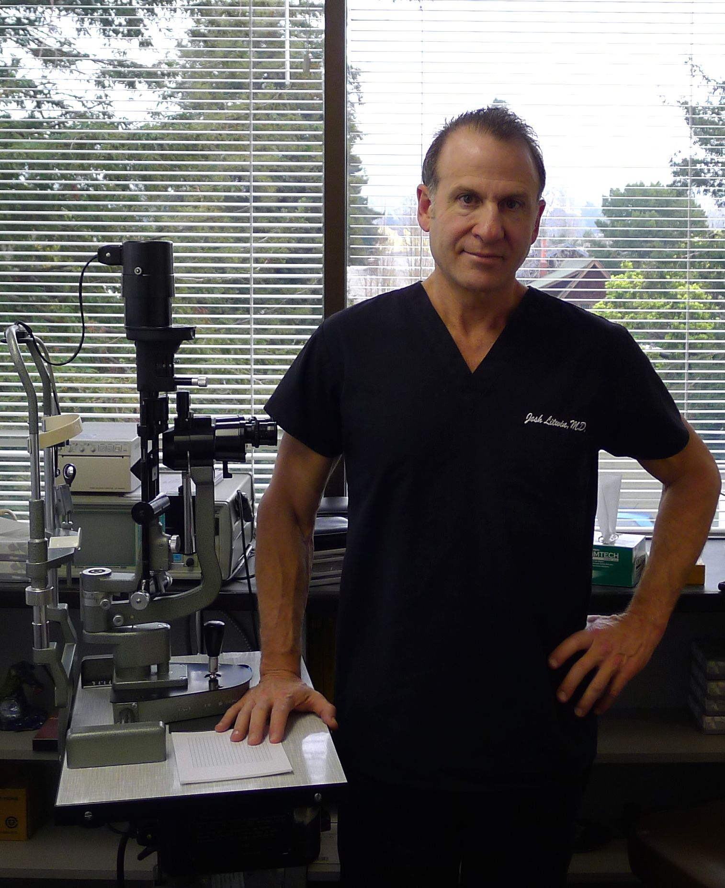

Office Hours: Mon - Fri (8a -12p & 1p - 5p)
Our Staff
Richard Litwin, M.D. | Joshua Litwin, M.D. | Susan Su, O.D.Richard Litwin, M.D.
Dr. Litwin examining Mani-Lal, a honey hunter in Nepal
Specialty: Ophthalmology
Board Certification: American Board of Ophthalmology
Dr. Litwin's Interests:
SEVA FOUNDATION USA
Originator of the WHO sponsored Nepal Blindness Program
ARAVIND EYE HOSPITAL INDIA
Now the world's largest eye care system
TILGANGA EYE HOSPITAL NEPAL
Providing services and training all along the Himalayas and around the world
THE HIMALAYAN CATARACT PROJECT USA
Supporting Tilganga Eye Hospital and training ophthalmologists and sub specialists in Africa and around the world
VIVEKANANDA MISSION ASRAM INDIA
Providing eye care to six million people in West Bengal
Joshua Litwin, M.D.
Board Certification: American Board of Ophthalmology
Joshua Litwin, M.D., is a board-certified ophthalmologist, residency-trained at the University of Washington (2000-2004). He also completed a fellowship in cosmetic surgery in 2012. His interests include the diagnosis and treatment of eye diseases including glaucoma, macular degeneration, diabetic retinopathy, blepharospasm, dry eyes and other ocular surface diseases. He has done several surgical eye missions in India and Nepal, treating ocular conditions like cataracts and trachoma. He also enjoys running to the top of Panoramic Hill every morning, working out in the gym, and playing the guitar.
Susan Su, O.D.
Specialty: Optometry
Dr. Susan Su is a native of Southern California. She received her bachelor of science in human biology from the University of California, San Diego. She then completed her optometric training at the University of California, Berkeley, graduating with recognition from the Beta Sigma Kappa Honor Society. Dr. Su is passionate about local and global community outreach. She has previously volunteered as a music teacher at the Braille Institute and provided eye care to underserved populations in Nicaragua. Most recently, she's been very involved in community vision screenings servicing both children and adults. Dr. Su is fluent in Mandarin Chinese. In her personal time, she enjoys playing the ukulele, hiking, baking, and traveling.